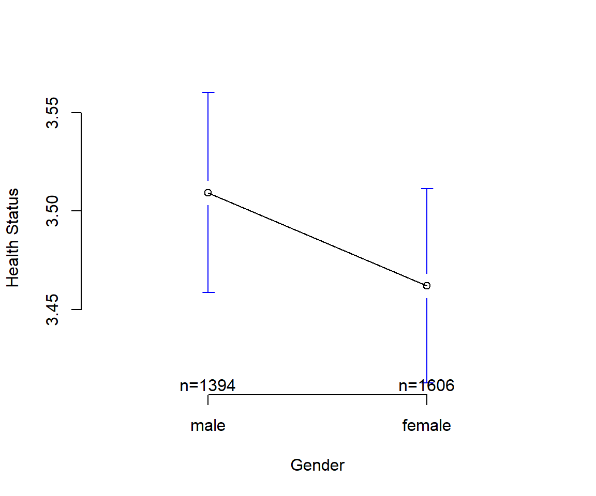

Chapter 5 Mean Comparison
The term mean comparisons refers to the comparison of the average of one or more continuous variables over one or more categorical variables. It is a general term that can refer to a large number of different research questions and study designs. For example, one can compare the mean from one sample of data to a hypothetical population value, compare the means on a single variable from multiple independent groups, or compare the means for a single variable for one sample over multiple measurement occasions. In addition, more complex research designs can employ multiple continuous dependent variables simultaneously, as well as a combination of multiple groups and multiple measurement occasions. Overall, mean comparisons are of central interest in any experimental design and many correlational designs.
Truly Dedicated
The mean usually refers to the arithmetic mean. Together with the geometric and the harmonic mean it satisfies the relationship \(\mathrm{AM} \ge \mathrm{GM} \ge \mathrm{HM}\).
The arithmetic mean is calculated as:
\(\bar{x} = \frac{1}{n}\left (\sum_{i=1}^n{x_i}\right ) = \frac{x_1+x_2+\cdots +x_n}{n}\)
For example, the arithmetic mean of five values: 4, 36, 45, 50, 75 is:
\(\dfrac{4+36+45+50+75}{5} = \dfrac{210}{5} = 42.\)
5.1 Application
In this application we compare the health situation between men and women.
5.1.1 Data Preparation
Load SOEP practice data from Github repository directly into memory.
library(haven)
soep <- read_dta("https://github.com/MarcoKuehne/marcokuehne.github.io/blob/main/data/SOEP/soep_lebensz_en/soep_lebensz_en.dta?raw=true")
# Complete case study
library(tidyverse)
soep <- soep %>% filter(complete.cases(.))
# Subset the year 2000
soep_2000 <- subset(soep, year == 2000)5.1.2 Grouped Mean
There are several options to calculate means per group.
## TAPPLY
means1 <- tapply(soep_2000$health_org, INDEX=soep_2000$sex, FUN=mean)
means1
#> 0 1
#> 3.509326 3.462017## AGGREGATE
means2 <- aggregate(health_org~sex, soep_2000, mean)
means2
#> sex health_org
#> 1 0 3.509326
#> 2 1 3.462017## BY
means3 <- by(soep_2000$health_org, soep_2000$sex, mean)
means3
#> soep_2000$sex: 0
#> [1] 3.509326
#> ------------------------------------------------------------
#> soep_2000$sex: 1
#> [1] 3.462017The class(means1) is an array, class(means3) is by. means2 is a dataframe. None of these base R functions reminds of what the values 0 and 1 stand for. The tidyverse package makes use of built in labels.
## DPLYR pipe
library(tidyverse)
means4 <- soep_2000 %>%
group_by(sex)%>%
summarize(means = mean(health_org))
means4
#> # A tibble: 2 × 2
#> sex means
#> <dbl+lbl> <dbl>
#> 1 0 [male] 3.51
#> 2 1 [female] 3.465.1.3 Furious with Factors
The dplyr solution uses labels (notice the type <dbl+lbl> for sex and <dbl> for means). Only few datasets comes with labels. And not all packages can handle them. The old fashioned way in R to have a readable and usable label is to define sex as a factor variable.
Definition
A factor variable is a variable used for categorical data.
Categories can be ordered (e.g. small, medium, large) or without order (e.g. men, women). An integer or string can be converted to a factor. Factors have hidden levels. Several R functions and packages treat factors fundamentally different from integers. When R handles sex as an integer, it assumes that values such as sex=-3 and sex=1.5 are possible.
This is what happens to numbers.
gender_numbers <- c(0, 1, 0, 1, 1)
summary(gender_numbers)
#> Min. 1st Qu. Median Mean 3rd Qu. Max.
#> 0.0 0.0 1.0 0.6 1.0 1.0A mean can be calculated. Compare to character coding.
gender_words <- c("male", "female", "male", "female", "female")
summary(gender_words)
#> Length Class Mode
#> 5 character characterNow, convert the gender variable to a factor and calculate the mean again.
soep_2000$sex_factor <- as.factor(soep_2000$sex)
levels(soep_2000$sex_factor) <- c("male", "female")
means <- tapply(soep_2000$health_org, INDEX=soep_2000$sex_factor, FUN=mean)
means
#> male female
#> 3.509326 3.462017The average health status is higher for men in comparison to women in the data. What can we learn from this difference? Is it small or large? Is it a cause for concern? How can we become more confident of the result? We do a statistical test that compares the means.
Definition
Hypothesis testing in statistics is a way to test the results of a survey or experiment to see if there are meaningful results.
It's basically testing whether the results are valid by figuring out the odds that the results have happened by chance. If the results may have happened by chance, the experiment won’t be repeatable and so has little use.
5.1.4 Plot with Confidence
Time to plot. An interval plot shows the group means and the confidence intervals around the means. It is similar to a box plot or dot plot. The plot is produced by the plotmeans() function (gplots package). It presents number of observations and factor levels by default.
Because there is substantial overlap of confidence intervals, we conclude that observed mean difference in health values between genders may not indicate a systematic problem.

Truly Dedicated
There is a statistically significant difference, when confidence intervals not overlap.
5.2 Student's t-test
What this has do to with beer.
Truly Dedicated
Student's t-test or simply t-test was published by W.S. Gossett who hid his name due to his position as a worker in a brewery company (Guiness Brewery Dublin).
There are several versions of a Student's t-test. The first distinction is whether there are one or two samples (groups). If there are two groups, the second distinction is whether there are one or two measurements in time.7
- One sample t-test
- Two sample tests
- Independent (or unpaired) t-test
- Classical Two Sample t-test (equal variances, i.e. homoscedasticity)
- Welch Two Sample t-test (unequal variances)
- Dependent (or paired or repeated) t-test
- Independent (or unpaired) t-test
Which is the most common one? Ask the simple implementation t.test() that tells you that it's a Welch Two Sample t-test.8 The Welch's t-test (or unequal variances t-test), is a two-sample location test which is used to test the hypothesis that two populations have equal means when the assumption of equal variances is dropped. The t.test() is unpaired since the default option is paired=FALSE. We will use the unpaired t-test for mean comparison between genders, since men and women are independent in the sense of statistical samples (though they may be related in other circumstances).
5.2.1 Independent t-test
The t.test() in R takes a formula and data as input. The relationship between health_org and sex_factor is specified as health_org ~ sex_factor, i.e. explain or calculate the health_org by sex_factor (if other way around, R returns an error message).
t.test(health_org ~ sex_factor, data=soep_2000)
#>
#> Welch Two Sample t-test
#>
#> data: health_org by sex_factor
#> t = 1.3118, df = 2968.8, p-value = 0.1897
#> alternative hypothesis: true difference in means between group male and group female is not equal to 0
#> 95 percent confidence interval:
#> -0.02340655 0.11802305
#> sample estimates:
#> mean in group male mean in group female
#> 3.509326 3.462017Look at the output of the t-test:
- The so called t-statistic is 1.3117519
- The degrees of freedom are 2968.8493968
- The p-value of 0.1897053
- The 95% confidence interval is [-0.0234066;0.118023]
The t-statistic is at the heart of this hypothesis test. The t value has to be compared to a critical value in a t table to decide whether or not to reject the null hypothesis (H0). The null states: Move along, there's nothing to see here!
The p-value can be seen as easy-alternative to the t-statistic. You probably never look up critical t values, do you? If you just want to glimpse at it, here is one. We are looking forward getting small p-values (smaller than 0.05 by convention). If p < 0.05 we say that we reject the null and conclude that there is actually something going on!
Definition
If a p value is less than 0.05, the result is called statistically significant.
The 95% confidence interval (CI) is another way of looking at the same issue. 95% of the values should be in the interval 0.1 to 0.3. Thus if zero is not in the CI we can be pretty sure that something is going on.
Degrees of freedom prefer to keep an air of mystery about them.
5.2.2 Dependent t-test
We prepare a before-after sample and focus on all women who are observed in 2000 and 2004.
women_before_after <- soep %>%
filter(sex == 1) %>% ## filter all females
filter(year == 2000 | year == 2004) %>% ## only use year 2000 OR 2004
group_by(id) %>% ## look at id groups
filter(n() == 2) ## only keep groups with exactly two observations/rowsNow run the t.test as paired=TRUE.
t.test(health_org ~ year, data=women_before_after, paired=TRUE)
#>
#> Paired t-test
#>
#> data: health_org by year
#> t = 5.7026, df = 815, p-value = 1.65e-08
#> alternative hypothesis: true mean difference is not equal to 0
#> 95 percent confidence interval:
#> 0.1125131 0.2306242
#> sample estimates:
#> mean difference
#> 0.1715686It looks like women have been significantly more healthy in 2000 than in 2004. Can you think of a reason? What happened to all those women?
Your Turn
Can you name a reason for the significant difference in health?
The paired t-test is a little bit more demanding in the way that we need data on something observed at two different points in time. In this before-and-after scenario, the person serves as something like its own control group. We'll come back to that.
What happens if we have paired data, but apply the unpaired test? The unpaired t-test on women's health is:
t.test(health_org ~ year, data=women_before_after, paired=FALSE)
#>
#> Welch Two Sample t-test
#>
#> data: health_org by year
#> t = 3.6158, df = 1629.9, p-value = 0.0003085
#> alternative hypothesis: true difference in means between group 2000 and group 2004 is not equal to 0
#> 95 percent confidence interval:
#> 0.07850093 0.26463633
#> sample estimates:
#> mean in group 2000 mean in group 2004
#> 3.497549 3.325980The mean difference is exactly the same. Can you spot it? Ask your console to calculate the difference between 3.497549 and 3.325980). But all the other statistics seem to be different: t-value, degree of freedom, p-value ...
Amazing Fact
In this scenario the mean difference from the paired=TRUE and paired=FALSE test are identical. But using the information from the paired sample (one person observed for two periods), the t-value became higher and thus the p-value lower. In a nutshell, we gained more statistical confidence in our estimate!
Once more we saw how valuable time is. We explore this in more detail in the next chapter.